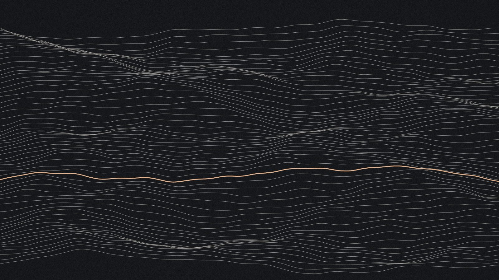
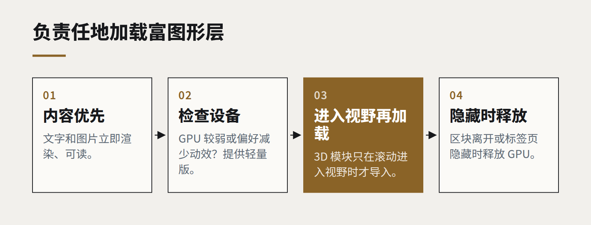

洞察
技术趋势
WebGPU 与富网页的回归
实时 3D、大规模可视化、端侧 AI，现在都能在一个普通浏览器标签页里运行。问题不再是网页能不能做到，而是你的内容配不配得上。

过去十年的大部分时间里，“富”网页体验意味着一个沉重的 JavaScript 包和一个加载转圈。严肃的图形留在原生应用和游戏引擎里，浏览器负责文档和表单。
这条边界已经移动了。主流浏览器已支持的 WebGPU，让网页能以现代方式直接访问显卡——和原生应用拥有的访问方式同一类。加上成熟的 WebGL 生态，实时 3D、大规模交互式数据可视化，甚至在用户自己的设备上运行 AI 模型，都成了浏览器的日常能力，而不再是实验。
它让什么变得可行
- 产品可视化。 加载快、在中端笔记本和手机上运行流畅的配置器和 3D 产品展示，无需安装应用。
- 大规模数据。 交互式地绘制数百万个数据点——传感器数据、交易、地理记录——拖动时筛选结果即时响应。
- 端侧推理。 用于转写、图像分类或文本嵌入等任务的小型 AI 模型，可以在用户的 GPU 上运行。数据从不离开设备，这对隐私敏感的工作很重要。
- 品牌时刻。 首页上一个令人难忘的交互作品，过去它可能只会是一段视频。
我们自己案例库里有三个概念作品——一颗被照亮的地球、一个机械机芯、一块玻璃标本——就是这样做的：由代码和很小的数据文件在浏览器里生成，不下载任何模型或贴图。它们是一次刻意的测试：看看一个普通网页如今能走多远。

它需要的纪律
能力不等于合适。让精美产品展示成为可能的同一种力量，也很容易让你发布一个耗光手机电量、把第一句话的出现推迟四秒的首页。
我们遵循的规则：
- 内容优先，图形其次。 在任何 3D 加载之前，页面必须可读、可用。富图形层只在滚动进入视野时加载，离开时释放。
- 按设备设预算。 在一台三年前的中端手机上测试。设备较弱或用户偏好减少动效时，自动提供更轻的版本。
- 生成，而不是下载。 加载时计算出的程序化几何和纹理，往往比它们所替代的素材更小。
- 测量。 像对待任何其他性能指标一样，认真追踪加载时间、帧率和电量消耗。
什么时候值得
一个有用的检验是：这个交互能否教会用户一张静态图片教不会的东西。旋转产品能看出它是怎么造的；拖动时间轴能看出数据里的规律；拖动地球找到一座城市，比读一张列表更快。如果 3D 只是为了显得厉害，一张做得好的图片会更好地服务用户，成本也低得多。
网页现在几乎什么都能做。手艺在于决定它应该做什么。
继续阅读
全部洞察